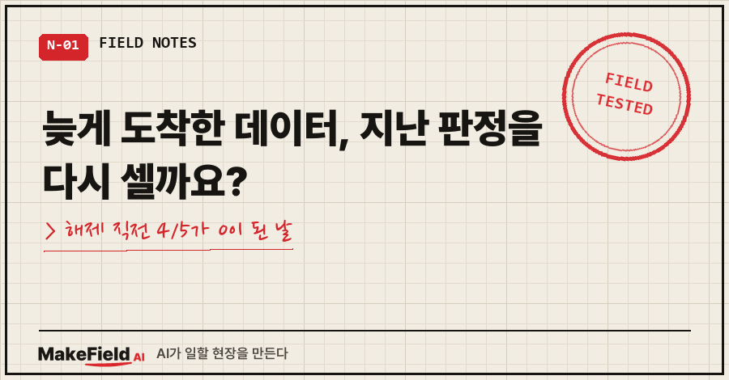
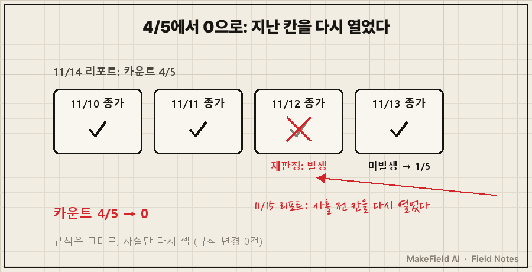
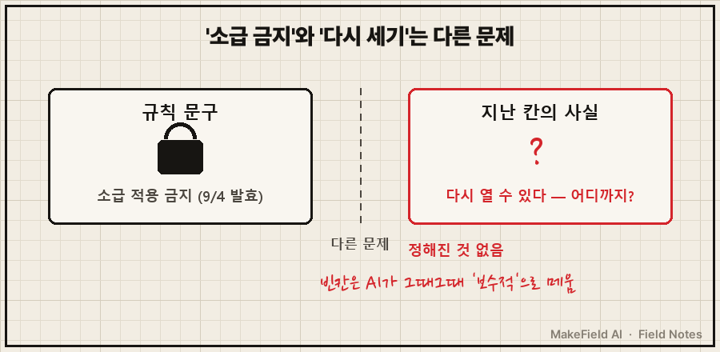
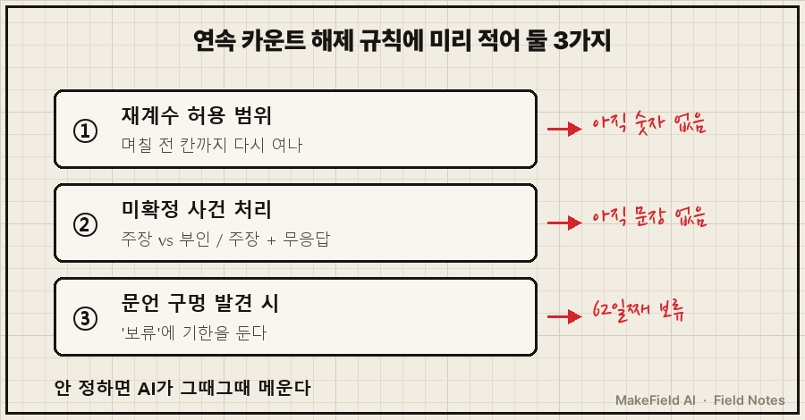

74일째 켜져 있던 경고등이 꺼지기까지, 딱 하루 남은 토요일이었어요.
🔴 RED 74일째 — 11/12 종가: 전건 미발생 → 카운트 4/55칸 중 4칸이 찼으니 하루만 더 조용하면 끝이었죠.
그런데 일요일 새벽에 온 리포트는 첫 줄부터 달랐습니다.
🔴 RED 75일째 — 11/12 재판정 → 발생, 카운트 4/5 → 0
11/13 미발생 → 1/5늦게 도착한 데이터가 이미 센 날의 판정을 바꾸면, 연속 카운트는 그날부터 다시 셉니다. 이번엔 사흘 전 밤 사건이 뒤늦게 확인되면서, 해제 직전이던 4/5가 0으로 돌아갔어요. 사람이 마음을 바꾼 게 아니라 규칙대로 센 결과였습니다.
낮엔 공장 설비 자동화를 만지고, 밤엔 AI가 써 준 투자 공부 리포트를 읽는 15년차 엔지니어예요. 지난번 장중 가격과 종가 차이로 판정이 뒤집힌 글 끝에 "카운트가 4까지 차 있던 날 같은 일이 났다면"이라고 적었는데요, 일주일 만에 진짜 4에서 터졌어요. 다만 원인은 숫자가 아니라 '늦게 온 사실'이었습니다.
1. 제 경보는 어떻게 꺼지게 돼 있었나
빨간불(RED)을 켜는 조건은 5개예요. 무력 충돌 확인, 유가, 공포지수 같은 것들이고요. 끄는 규칙은 하나입니다.
조건 5개가 모두 '미발생'인 종가가 5거래일 연속이면 해제이 규칙은 9월 4일 새벽에 발효됐고, 그때 한 줄을 같이 박아 뒀어요. "소급 적용 금지." 결과를 보고 규칙을 바꾸면 규칙이 죽는다는 이유였습니다.
참고로 이건 매매 지시가 아니라 경고등이에요. 이번 일로 바뀐 매수·매도 행동은 0건입니다.
2. 4/5에서 0까지, 날짜로 보면 이래요
| 리포트 | 판정한 날 | 결과 | 카운트 |
|---|---|---|---|
| 11/13(금) | 11/10·11/11 종가 | 미발생 | 3/5 |
| 11/14(토) | 11/12 종가 | 전건 미발생 | 4/5 |
| 11/15(일) | 11/12 재판정 | 발생(보수적 판정) | 0 |
| 11/15(일) | 11/13 종가 | 미발생 | 1/5 |
11월 15일 리포트에서 '11월 12일 밤에 공격이 있었다'는 한쪽 국영매체 보도가 확인됐어요. 상대 측은 무응답이었고요. AI는 이미 '미발생'으로 센 11월 12일 칸을 다시 열어서 '발생'으로 고쳤습니다.

솔직히 말하면 '늦게 온' 것만도 아니었어요. 전날 리포트도 다른 공격 주장 기사를 읽긴 했거든요. 그 기사 안에 "~에 대한 보복으로"라는 이유 문장이 있었고, 그 이유가 바로 11월 12일 밤 사건이었는데 그걸 그냥 지나쳤던 거예요. 리포트 학습 기록엔 이렇게 남았습니다.
주장 기사의 보복 «사유» 문장은 선행 사건의 고백 — 11/14 판정 누락 원인정보가 늦게 온 것 반, 우리가 늦게 읽은 것 반이었던 셈이죠..
3. 규칙은 소급 금지인데, 판정은 소급해도 되나요?
결론부터 말하면 둘은 다른 문제예요. '소급 금지'는 규칙 문구를 나중에 바꾸지 말라는 뜻이지, 사실이 바뀌었는데 지난 칸을 그대로 두라는 뜻이 아니었어요. 그래서 이날 기록엔 규칙 변경 0건, 신규 규칙 0건이 찍혔고 재판정은 "사실 재계수"로만 남았습니다.
문제는 그 재계수를 어디까지 해도 되는지 제 규칙 어디에도 안 적혀 있었다는 거예요.
사흘 전 칸은 다시 열었는데, 그럼 열흘 전 칸도 열어야 할까요?
상대가 부인하거나 침묵하는 '주장'은 발생으로 셀까요, 미발생으로 셀까요?
이번엔 AI가 그 빈칸을 '보수적으로', 즉 경보가 덜 꺼지는 쪽으로 메웠어요. 방향은 맞았지만, 정해 둔 규칙이 아니라 그때의 판단이었습니다.

여러분 자동화에도 "N번 연속 정상이면 해제" 같은 조건이 있다면, 늦게 들어온 값이 지난 칸을 바꿀 수 있는지 한번 떠올려 보세요.
4. 데이터 쪽에선 이미 이름이 붙어 있는 문제예요
공장에서도 익숙한 장면이에요. 알람 래치를 풀 때 'N사이클 정상'을 조건으로 거는데, 통신이 밀려서 몇 사이클 전 이상값이 나중에 올라오면 그 사이클을 정상으로 센 게 틀린 게 되죠.
데이터 처리 쪽에선 이걸 아예 '늦게 도착한 데이터(late data)'라고 부르고 다룹니다. 아파치 빔(Apache Beam) 공식 가이드는 "데이터가 항상 시간 순서대로 도착한다는 보장은 없다"고 전제하고, 기본 설정은 늦게 온 데이터를 받지 않는다고 적어요. 받고 싶으면 withAllowedLateness로 "구간이 끝난 뒤 며칠까지는 받는다"를 숫자로 따로 지정하게 돼 있고요. 가이드 예시가 2일이에요.
제 규칙엔 그 숫자가 없었던 거예요. 그래서 이번 재계수는 맞는 판단이었는데도, 매번 다른 판단이 나올 수 있는 자리로 남아 있습니다.
5. 연속 카운트 해제 규칙에 미리 적어 둘 3가지

- 재계수 허용 범위 — 늦게 확인된 사실로 며칠 전 칸까지 다시 열지. 이번엔 사흘 전이었어요.
- 미확정 사건 처리 — 한쪽 주장에 상대가 부인하거나 무응답이면 어떻게 셀지. 이번 주에 둘 다 나왔어요. '주장 vs 부인'은 "다음 종가 시점의 사실로 판정한다"며 미뤘고, '주장 + 무응답'은 보수적으로 '발생'을 줬습니다. 둘을 가르는 문장은 규칙에 없어요.
- 문언 구멍의 보류 기한 — 이번에 하나가 더 드러났어요. 조건 1번은 '제3국에 있는 기지 공격'을 어떻게 셀지 문장이 비어 있어서 플래그만 남겼고요. 조건 5번은 문장 결함 때문에 이미 62일째 '보류' 상태입니다. 구멍을 알고도 두 달 넘게 그대로 돌리고 있는 거죠.
세 번째가 제일 아파요. 플래그를 다는 건 쉬운데, 언제까지 고칠지를 안 정하니 보류가 그냥 상태가 돼 버렸어요.
자주 묻는 질문
Q. 그냥 늦게 온 데이터는 무시하면 깔끔하지 않나요?
경보를 '켜는' 쪽이면 그럴 수도 있어요. 그런데 '끄는' 쪽이면 무시한 만큼 위험한 날이 정상으로 세지고, 그 정상이 쌓여 경보가 꺼집니다. 그래서 이번엔 다시 세는 쪽이 맞았다고 봐요.
Q. 다시 세면 결과를 보고 규칙을 바꾸는 거랑 뭐가 다른가요?
바꾼 건 규칙 문구가 아니라 지난 칸에 들어갈 사실이에요. 다만 그 경계가 흐려지지 않으려면 위 1·2번을 숫자와 문장으로 먼저 박아 둬야 합니다. 안 박혀 있으면 다음번엔 '불리하니까 안 센다'도 똑같이 그럴듯해지니까요.
이 글은 개인 공부용 리포트의 규칙 설계 이야기이고, 특정 매매를 권하는 내용이 아닙니다.
다음 판정은 화요일 새벽 리포트예요. 1/5에서 다시 시작한 카운트가 어떻게 가는지, 그리고 위 3가지 중 몇 개를 실제로 숫자로 박았는지 이어서 적어 볼게요.
규칙이 스스로 판정을 되돌리는 장면들은 makefield.ai에도 차곡차곡 모으고 있습니다.
출처
- Apache Beam Programming Guide, 8.4 Watermarks and late data / 8.4.1 Managing late data → https://beam.apache.org/documentation/programming-guide/#watermarks-and-late-data
태그: #늦게도착한데이터 #지연데이터 #지난판정재계산 #경보해제 #연속카운트 #알람리셋 #인터록리셋 #소급적용 #자동판정규칙 #AI판정오류 #AI투자리포트 #AI자동화 #워터마크 #AI오답노트 #MakeFieldAI